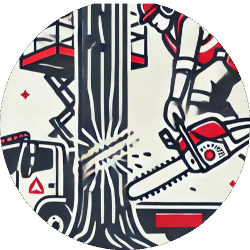

Usługi w Jeleniej Górze
Zwyżka przegubowo-teleskopowa 21,5 m • mobilny dojazd • elastyczne terminy

Wynajem podnośników
Kompleksowa obsługa zwyżką dla inwestycji miejskich, wspólnot mieszkaniowych i firm usługowych.

Prace dekarskie
Naprawy dachów, montaż orynnowania i uszczelek w zabudowie wielorodzinnej oraz historycznej.

Usuwanie zagrożeń
Bezpieczne przycinanie drzew, demontaż gałęzi nad ciągami pieszymi i zabezpieczanie elewacji.